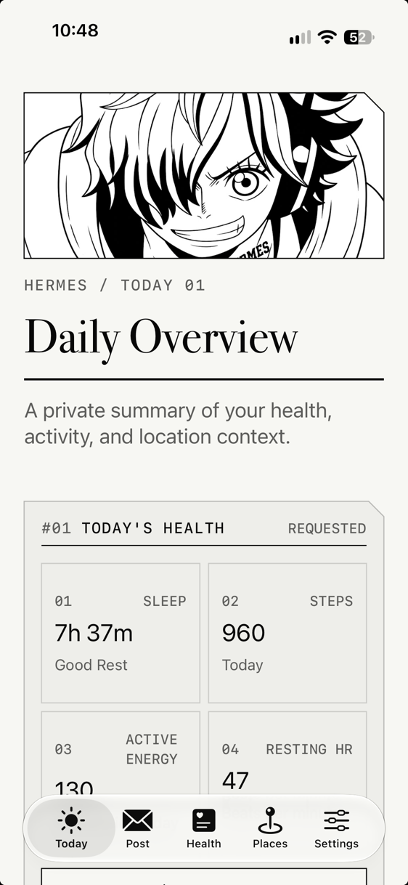
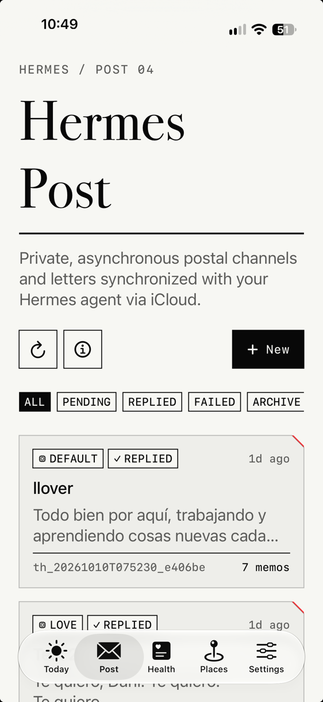
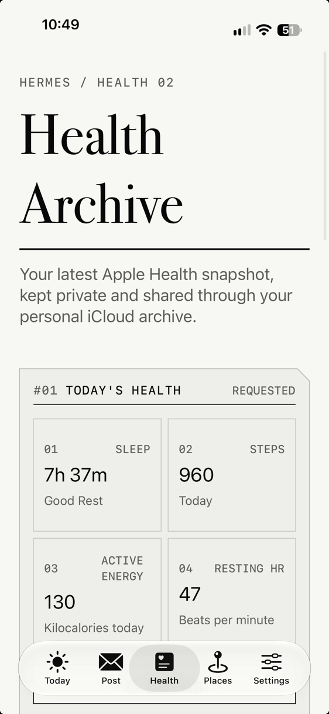
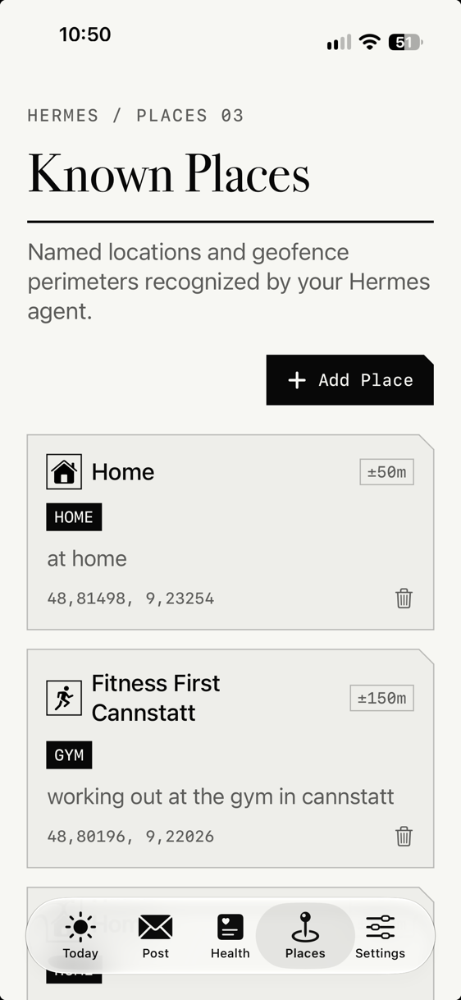

Give your agent senses.
Your agent knows your mind. Now she understands your day. Live place, physical motion, sleep quality, workout recovery, and a private asynchronous postbox — synced directly to your AI companion through your own private iCloud with zero relay servers, no open ports, and no VPN or Tailscale tunnels.
What your agent understands about your day
Instead of asking you repetitive questions, your agent already knows your physical context and offers intelligent, caring insights.
She knows whether you slept 8 hours or had a rough 4-hour night. She adjusts her tone, suggests lighter work schedules when you are fatigued, and cheers on your recovery.
She recognizes when you're at Home, at the Office, or in transit. When you stay put for hours, she knows you're still there working hard, not that you just arrived.
Steps, active calories, and completed runs sync automatically after you finish training. She congratulates your milestones and tracks your consistency.
Drop an inquiry or briefing to your agent anytime. She reads your correspondence on your Mac, consults your telemetry, and replies straight to your postbox.
The Native iPhone Companion
Designed in a monochrome, distraction-free aesthetic. Crisp hairlines, archival typography, and zero notification clutter.




How it works: zero external servers
No cloud company hosts your location. Everything moves through your own Apple ID.
.sync_marker.json to protect battery.
~/Library/Mobile Documents/. Segregates active threads from archives.
No VPNs. No Tailscale. No Cloudflare Tunnels.
Virtually every other mobile agent tool requires you to maintain an always-on VPN profile (Tailscale, WireGuard), open router ports, or forward traffic through reverse tunnels. Hermes Companion replaces fragile network plumbing with native Apple iCloud Drive ubiquity.
- Heavy Battery Drain: Persistent iOS VPN tunnels (Tailscale / WireGuard) prevent the device from entering deep sleep, draining battery constantly in your pocket.
- Connection Drops: Handover between home Wi-Fi and 5G cellular breaks active TCP sockets and socket streams.
- Network & Security Friction: Requires NAT traversal, dynamic DNS, router port forwarding, or trusting third-party relay brokers with unencrypted telemetry.
- Zero Network Plumbing: No VPN apps to run, no Tailscale node keys, no Cloudflare tunnels, and zero open firewall ports.
- Works Everywhere: Functions seamlessly behind strict carrier CGNAT, corporate Wi-Fi firewalls, and while traveling abroad.
- Zero Battery Waste: The app sleeps silently until physical motion triggers an update; Apple's OS daemon handles synchronization.
Install in 30 seconds
One Hermes CLI command installs the skill on your Mac.
# Use --force to authorize the LaunchAgent background responder: $ hermes skills install --force danielmain/hermes-companion/skills/hermes-companion
$ python3 ${HERMES_SKILL_DIR:-$HOME/.hermes/skills/hermes-companion}/scripts/companion.py --doctor # Result: [PASS] Operating System macOS (native host) [PASS] iCloud Drive Active at ~/Library/Mobile Documents [PASS] App Container Found at iCloud~com~hermes~HermesCompanion [PASS] Hermes CLI Executable located at ~/.local/bin/hermes [PASS] Background Service LaunchAgent 'ai.hermes.companion-inbox' is active. Diagnostic summary: All critical checks passed.
$ python3 ${HERMES_SKILL_DIR:-$HOME/.hermes/skills/hermes-companion}/scripts/companion.py --context # Result: place: Home motion: stationary sleep_duration_hours: 7.6 last_workout: Running
# Install resident LaunchAgent to auto-reply to pending letters: $ python3 ${HERMES_SKILL_DIR:-$HOME/.hermes/skills/hermes-companion}/scripts/companion.py --install-service # Query pending letters and inbox threads: $ python3 ${HERMES_SKILL_DIR:-$HOME/.hermes/skills/hermes-companion}/scripts/companion.py --inbox --pending # Result: [INBOX] 1 pending letter awaiting reply: Thread: th_20261010T075230_e406be (profile: default) Letter: "Todo bien por aquí, trabajando y aprendiendo cosas nuevas cada día..." Dispatched agent reply via iCloud in 2.1s
Need setup assistance or diagnostic help?
Visit the Support Desk for permission checklists, interactive diagnostic tests, and direct contact.